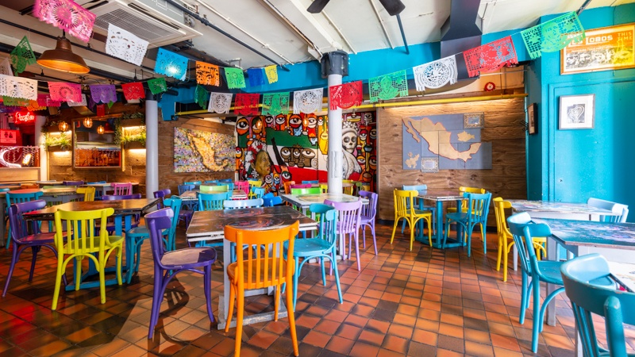

"Un taco al día es la clave de la alegría"
Saborcito mexicano un restaurante actualmente icónico por todo el país de México. Gracias a la preferencia nos hemos convertido en un restaurante emblemático de nuestra ciudad y próximamente país. Saborcito mexicano comenzó en 1980 cuando doña Esmeralda y su esposo Don José decidieron abrir un pequeño afuera de su casa para salir de una situación económicamente difícil. Doña Esmeralda siempre se caracterizó por su buen sazón, tanto así que su esposo la animó a poner su propio puesto de comida mexicana.
Al principio, a Doña Esmeralda le preocupaba que el negocio fuera a fracasar, pero desde la primera semana no había día en el que alguien no se parara a degustar uno de sus platillos. Debido al éxito que tuvo, decidieron expandirse pues el espacio del pequeño local ya no era suficiente, abriendo sucursales en distintos lugares en México. Doña Esmeralda siempre expresa lo agradecida que se siente con el éxito que han tenido sus negocios y siempre cita “El negocio lo hacen los clientes, sin ellos simplemente sería un local más” es por esto que siempre buscan mejorar la calidad en todos los aspectos para que cada cliente se lleve una experiencia única e inolvidable. A pesar de su gran éxito Doña Esmeralda siempre trata de involucrarse lo más que puede en sus negocios e incluso aún cocina ella misma en algunos de ellos.